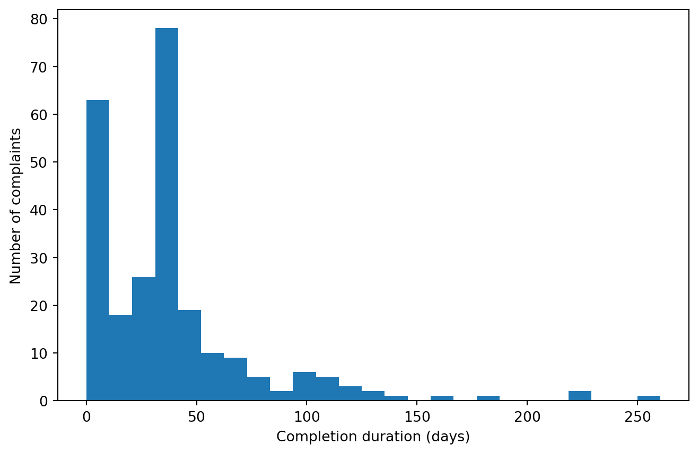
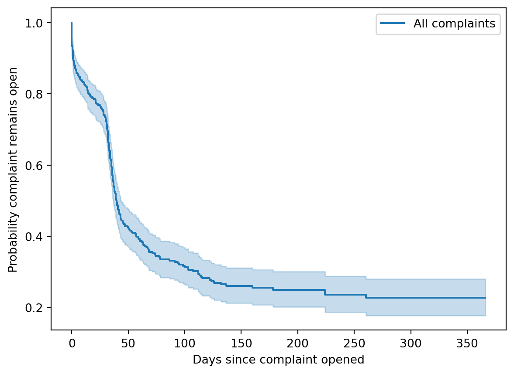
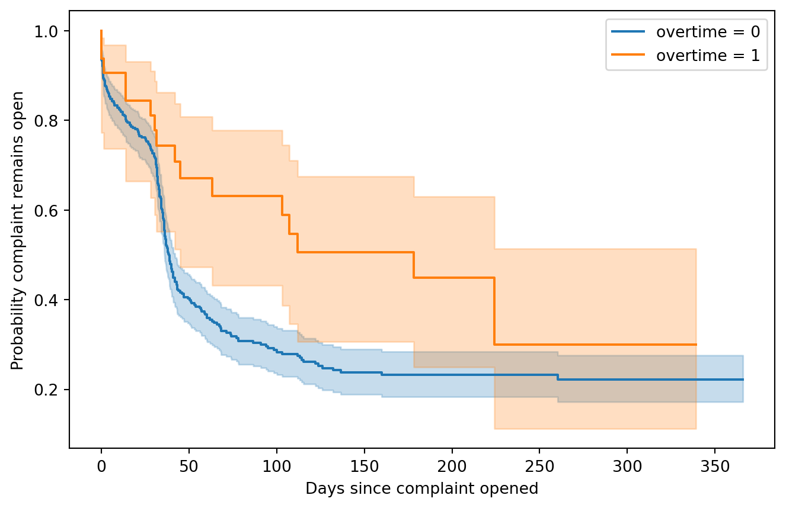

How much can the information available in a 311 wage complaint tell us about how long that complaint will remain open?
I explored this question using 374 wage complaints and a set of features describing the issues raised in each complaint, the quality and content of its written description, and characteristics such as whether multiple workers were involved. The complaints were taken from a backend version of the City of Chicago’s 311 system. This backend access featured complaints encrypted by the Office of Labor Standards, but I was still able to read each complaint’s “description” field. These descriptions formed the basis for each complaint’s features. The date range within which complaints were opened spanned from July 17, 2025 to July 17, 2026.
I began with ordinary linear regression on completed complaints, then moved to survival analysis so that complaints still open at the end of the observation period could remain in the analysis as right-censored observations.
The modeling results are intentionally modest. The linear models did not generalize well, and the survival models achieved only moderate ranking performance. The more important result was methodological: time-to-resolution is better framed as a censored time-to-event problem than as an ordinary regression problem that discards every complaint still open.
Tools
Python, pandas, NumPy, scikit-learn, matplotlib, and lifelines.
Data and Feature Engineering
The source data contain timestamps for when each complaint was opened and, when applicable, closed. The remaining variables are primarily binary indicators describing the complaint.
The issue indicators include categories such as overtime, minimum wage, final paycheck, deductions or benefits, retaliation, tips, payroll records, and leave or vacation pay. Additional engineered variables describe features of the complaint narrative, including whether evidence was mentioned, whether multiple workers were involved, and an ordinal description-quality score.
The dataset contains 374 complaints: 252 closed complaints and 122 complaints that were still open at the censoring point used in the analysis. That distinction becomes important later.
First Approach: Ordinary Linear Regression
Modeling Only Completed Complaints
My first approach treated completion time as a standard continuous response variable. Because an unresolved complaint does not yet have a final completion time, this required removing every complaint that was still open.
count 252.000000
mean 37.379823
std 38.427271
min 0.001389
25% 10.673958
50% 33.018750
75% 42.171528
max 260.274306
Name: completion_duration, dtype: float64
Among the completed complaints, the mean observed completion time in the notebook was approximately 37.4 days. The distribution was also right-skewed.

Distribution of resolution times among completed complaints.
Full Regression Baseline
For the initial multivariable model, I used issue indicators, complaint-characteristic indicators, and dummy variables for description quality. I excluded issue_count from the full model after diagnosing multicollinearity with the individual issue indicators. The all-zero description-quality category serves as the reference category.
Metric
Test result
0
R²
-0.216150
1
MAE (days)
30.797938
2
RMSE (days)
45.811908
In the original notebook, the holdout model produced:
R² = -0.216
MAE = 30.8 days
RMSE = 45.8 days
A negative test R² means the fitted model generalized worse than simply predicting the test set using a constant mean benchmark.
Cross-Validation
I also evaluated the model with five-fold cross-validation on the training set.
Metric
Value
0
Mean CV R²
-0.176149
1
SD of CV R²
0.283964
2
Mean CV MAE (days)
26.209585
The original five folds produced a mean CV R² of -0.176 and a mean CV MAE of 26.2 days. Performance varied substantially across folds, reinforcing the conclusion that the available intake features did not support a reliable linear prediction of final completion time.
Trying Simpler Specifications
I tested whether the poor performance was mainly a consequence of the large predictor set or the skewed response. The notebook compared models using only issue count, only description quality, a square-root transformation of completion time, and a smaller set of issue indicators.
Specification
Mean 5-fold CV R²
0
Full intake-feature model
-0.1761
1
Issue count only
-0.0431
2
Description quality only
-0.0593
3
Full model, sqrt(response)
-0.1578
4
Issue count only, sqrt(response)
-0.0101
5
Issue indicators only, sqrt(response)
-0.0567
None of these specifications produced positive mean cross-validated R². Transforming the response improved its shape but did not solve the underlying prediction problem.
Why Change the Modeling Framework?
The linear-regression experiment exposed a more fundamental problem.
To use ordinary regression, I had removed 122 unresolved complaints — nearly one-third of the dataset — solely because their final completion times were not yet known. Those complaints are not missing in the usual sense. Each one tells us something important: the complaint had remained open for at least a known amount of time.
That is a classic right-censoring problem.
Survival analysis allows those observations to contribute information without pretending that their eventual closure times are already known.
Survival Analysis
Constructing the Time-to-Event Data
For closed complaints, the event time is the elapsed time between opening and closure. For complaints still open, the duration is measured from opening until the censoring cutoff.
The notebook used July 17, 2026 at 11:31 AM, the latest observed closure timestamp in the data, as its cutoff.
Here, event_observed = 1 means the complaint closed during the observation period; event_observed = 0 means it was still open at the cutoff.
Kaplan–Meier Estimate
I first estimated the overall survival curve nonparametrically using Kaplan–Meier estimation. In this setting, the survival function represents the probability that a complaint remains open beyond a given number of days.

Kaplan–Meier estimate of the probability that a complaint remains open.
np.float64(39.84513888888889)
The estimated median time to closure was approximately 39.85 days. In other words, the Kaplan–Meier estimate falls to 0.5 at roughly 40 days.
Parametric Accelerate Failure-Time Models
To model how complaint characteristics relate to time-to-closure while accommodating censoring, I compared three parametric accelerated failure-time (AFT) specifications:
Weibull
Log-normal
Log-logistic
The full specification used 24 intake and complaint-description features.
Holdout Performance
I evaluated discrimination using the concordance index (C-index). A higher C-index means the model is better at correctly ranking which of two complaints remains open longer.
Model
Test C-index
Test log-likelihood
Training AIC
0
Weibull
0.577079
-3.320082
2146.594667
1
Log-normal
0.621124
-3.481862
2215.202074
2
Log-logistic
0.606292
-3.386675
2170.838844
In the notebook, the log-normal model had the highest single holdout C-index (0.621), followed by log-logistic (0.606) and Weibull (0.577).
A single train-test split can be noisy, however, so I also compared the models across five folds.
Five-Fold Cross-Validation
Model
Mean CV C-index
SD
0
Weibull
0.542084
0.040162
1
Log-normal
0.523215
0.031702
2
Log-logistic
0.540076
0.044157
The notebook produced the following mean C-indices:
Model
Mean 5-fold C-index
SD
Weibull
0.542
0.040
Log-normal
0.523
0.032
Log-logistic
0.540
0.044
This changes the interpretation of the single holdout result. Although the log-normal model performed best on that particular test set, its advantage did not persist across folds. Overall discrimination was modest, and the ranking of the three parametric models was not especially stable.
That is a more useful conclusion than choosing a “winner” from one split.
Exploring Differences in Resolution Curves
I also used Kaplan–Meier curves and log-rank tests to explore whether particular binary complaint characteristics were associated with visibly different time-to-closure distributions.
Six variables produced log-rank p-values below 0.05 in the exploratory screen:
Variable
Value
N
Observed closures
KM median days
Log-rank p-value
0
deductions_or_benefits
0
354
235
39.846528
0.018576
1
deductions_or_benefits
1
20
17
33.043056
0.018576
2
leave_or_vacation_pay
0
336
235
38.282639
0.007875
3
leave_or_vacation_pay
1
38
17
103.097222
0.007875
4
overtime
0
342
235
38.647917
0.022375
5
overtime
1
32
17
178.027083
0.022375
6
ambiguous_primary
0
270
167
43.996528
0.001447
7
ambiguous_primary
1
104
85
36.793750
0.001447
8
multiple_workers
0
300
212
38.647917
0.049876
9
multiple_workers
1
74
40
47.116667
0.049876
10
description_quality_4.0
0
259
189
36.466667
0.000091
11
description_quality_4.0
1
115
63
74.100694
0.000091
The original notebook produced several large differences in estimated median time-to-closure. For example:
Complaints with an overtime indicator had an estimated median of about 178.0 days, compared with 38.6 days for complaints without that indicator (p ≈ 0.022).
Complaints with a leave or vacation pay indicator had an estimated median of about 103.1 days, compared with 38.3 days for complaints without it (p ≈ 0.0079).
Complaints in the highest encoded description-quality category had an estimated median of about 74.1 days, compared with 36.5 days for other complaints (p < 0.001).
Complaints involving multiple workers had an estimated median of about 47.1 days, compared with 38.6 days otherwise (p ≈ 0.050).
These comparisons are exploratory associations, not causal effects. They were obtained by screening multiple variables separately, and some categories may contain relatively few complaints. The p-values should therefore be interpreted cautiously rather than as definitive evidence that a particular complaint characteristic causes longer or shorter resolution.
Example Kaplan–Meier Comparison

Estimated time-to-closure distributions for complaints with and without an overtime indicator.
An Exploratory Reduced Model
After the univariate Kaplan–Meier screen, I also fit AFT models using the six variables whose log-rank tests had p-values at or below 0.05.
Those reduced models produced mean five-fold C-indices of approximately:
Model
Mean 5-fold C-index
Weibull
0.578
Log-normal
0.572
Log-logistic
0.575
These numbers are encouraging relative to the full 24-feature specification, but I would not treat them as final validation performance. The variables were selected after looking at the full dataset, so the selection step itself had access to information that later appeared in the evaluation folds.
A cleaner follow-up would perform feature screening inside each training fold or use a fully prespecified reduced feature set before evaluating on untouched data.
What I Learned
This project changed direction because the first model failed.
The initial linear-regression models had negative cross-validated R² across every specification I tried. Rather than treating that as a reason to keep tuning the same model, I reconsidered the structure of the outcome itself.
That led to three main conclusions:
The available complaint metadata have limited predictive power for exact resolution time. Neither the large linear model nor simpler transformed variants generalized reliably.
Survival analysis is a better formulation of the problem. It preserves information from complaints that remain unresolved rather than dropping nearly one-third of the dataset.
Some complaint characteristics are associated with different resolution-time distributions, but prediction remains difficult. AFT models achieved only modest C-index performance, and exploratory Kaplan–Meier comparisons should not be interpreted causally.
For an operational setting, that means these intake features may be more useful for risk stratification and identifying potentially long-running cases than for promising a precise number of days until closure.
Limitations and Next Steps
There are several reasons to keep the results modest.
Small sample: The dataset contains 374 complaints, only 252 of which had observed closures.
Limited predictors: Intake metadata may omit important drivers of processing time, such as staffing, investigator workload, employer responsiveness, legal complexity, or changes in administrative procedure.
Administrative censoring: The notebook used the latest observed closure time as the censoring cutoff. If the true data-extraction timestamp is available, that would be a more defensible administrative cutoff.
Parametric assumptions: Weibull, log-normal, and log-logistic AFT models each impose assumptions about the distribution of survival times.
Exploratory multiple testing: The Kaplan–Meier variable screen tested many predictors independently, so individual p-values should not be overinterpreted.
Feature-selection leakage in the reduced model: The reduced feature set was identified using the full dataset before cross-validation. A future version should nest selection within training folds.
No causal interpretation: The analysis is observational. Differences in survival curves do not establish that any complaint characteristic causes a delay.
A next iteration could compare regularized survival models, survival forests, or boosting methods; use nested cross-validation for feature selection; and incorporate operational variables that better capture the administrative process itself.
Bottom Line
The strongest result was not a high accuracy score. It was recognizing that the original regression formulation was throwing away exactly the cases that make resolution-time modeling difficult.
Moving from ordinary regression to censored time-to-event modeling allowed all 374 complaints to contribute information and produced a more defensible representation of the real operational problem.